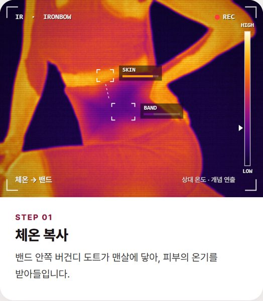
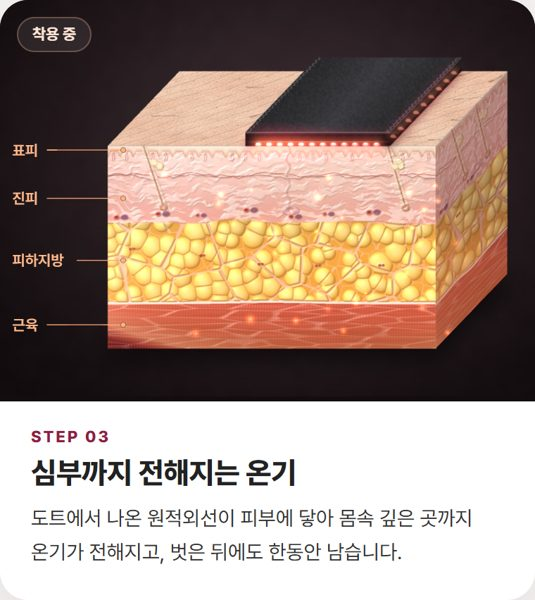
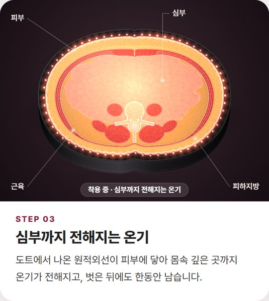
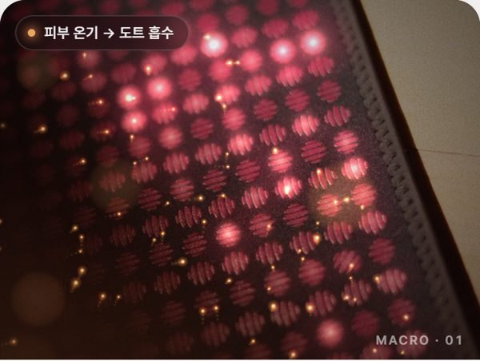
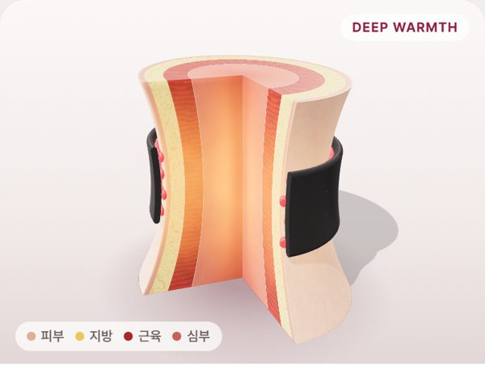
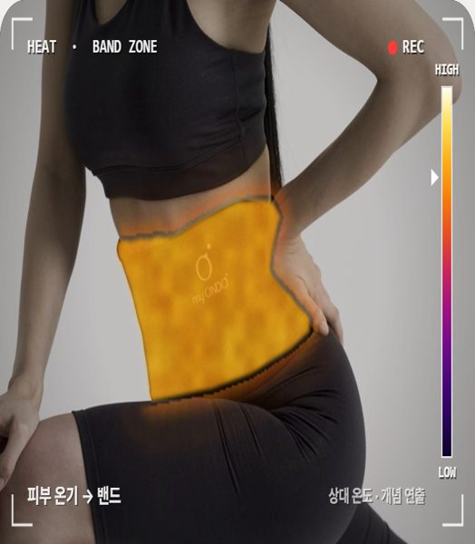

각 시안을 눌러 휴대폰 화면 기준으로 확인해 주세요. 카드가 화면에 들어오면 단계별 애니메이션이 재생됩니다.

V1
실제 모델 사진을 열화상 화면으로 바꿔, 밴드가 데워지고 온기가 몸통으로 퍼진 뒤 벗어도 남는 모습을 보여 줍니다.
시안 보기 →

V2
의학 교과서풍 피부 조직 블록 위에 밴드가 놓이고, 도트 → 진피 → 지방 → 근육 순으로 온기가 내려갑니다.
시안 보기 →

V3
허리를 가로로 자른 단면에 밴드가 둘러지고, 온기가 바깥에서 몸 중심(심부)으로 들어갑니다.
시안 보기 →

V4
실제 도트 접사 사진과 착용 사진 위에 빛 입자·파동 효과를 얹은 광고 영상 느낌입니다.
시안 보기 →

V5
3D 허리 모형을 천천히 돌려 보이며, 단면 속 층을 따라 열이 심부까지 전해지는 모습을 보여 줍니다.
시안 보기 →

V6 · NEW
실제 사진은 그대로 두고 밴드 부위만 열화상 색으로 표시합니다. 데워진 밴드에서 열이 몸 윤곽 안쪽으로만 번져 들어갑니다.
시안 보기 →
원리와 지속 시간은 브랜드 설명이며, 모든 시안의 그림·영상은 이해를 돕기 위한 개념 연출입니다.